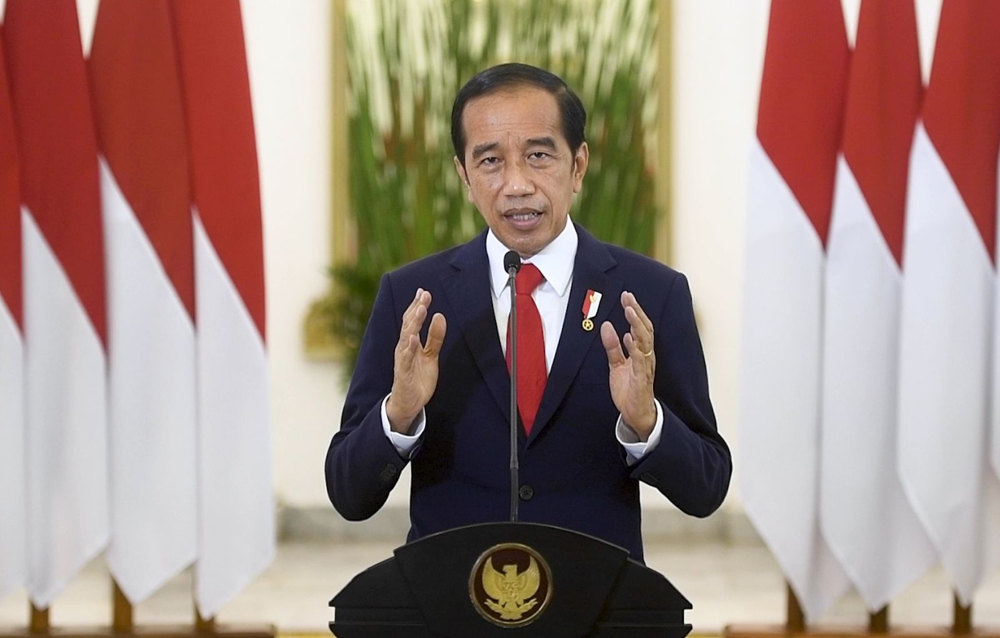

NAMA:JOKOWI DODO
JABATAN:PRESIDEN
Joko Widodo ; lahir 21 Juni 1961, lebih dikenal sebagai Jokowi adalah politikus dan
pengusaha Indonesia yang menjabat sebagai Presiden Indonesia ketujuh dari tahun 2014
sampai 2024.Sebelumnya ia adalah anggota Partai Demokrasi Indonesia Perjuangan (PDI-P).
Ia adalah presiden Indonesia pertama yang bukan berasal dari elit politik atau militer
dan menjadi presiden Indonesia pertama yang sebelumnya menjabat sebagai kepala daerah,
di mana ia menjabat sebagai Gubernur DKI Jakarta dari tahun 2012 hingga 2014 dan Wali
kota Kota Surakarta dari tahun 2005 hingga 2012.